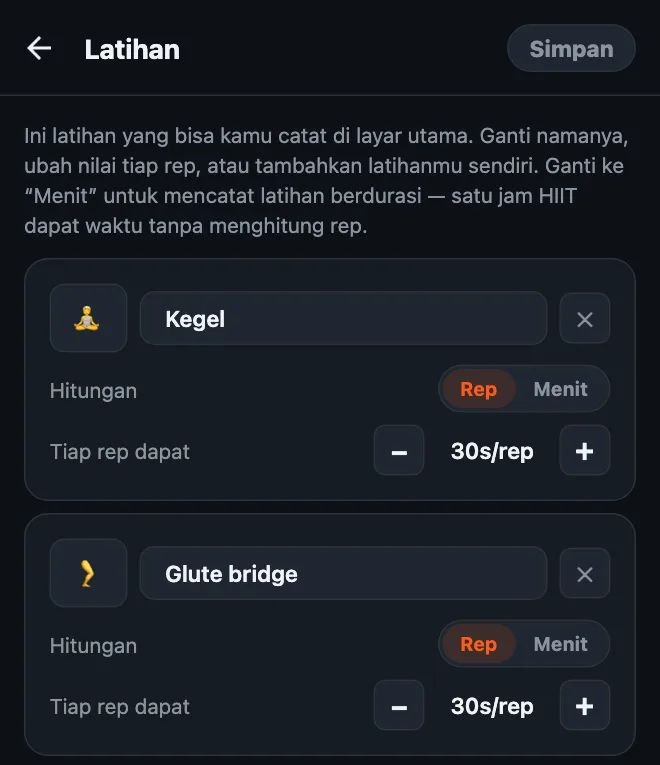
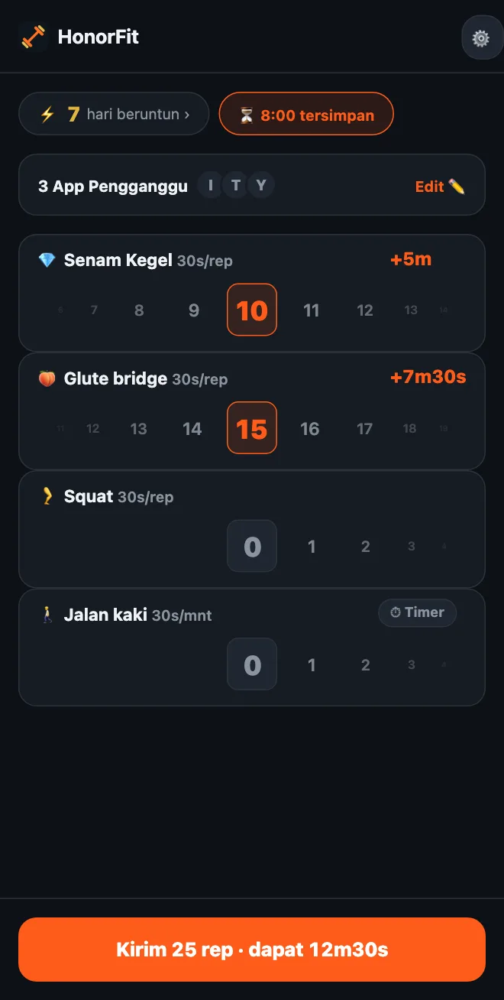

Senam Kegel untuk membuka kunci HP
Halo semuanya! Aku membuat HonorFit karena aku mau ada push up di antara aku dan Instagram, tanpa harus menyandarkan HP supaya kamera bisa menghitungnya (melakukan itu di pom bensin bukan momen terbaikku, haha). Kamu lakukan rep-nya, catat sendiri, dan aplikasimu terbuka.
Tapi push up tidak cocok untuk semua orang. Dan salah satu latihan yang paling pas dengan ide ini malah bukan push up sama sekali: senam Kegel dan glute bridge. Ini alasannya, dan cara mengaturnya.
Kenapa Kegel cocok sekali dengan sistem kejujuran
Tidak ada yang bisa melihat orang senam Kegel. Tidak orang di sebelahmu di bus, tidak rekan kerjamu, dan jelas bukan kamera HP. Aplikasi yang menghitung rep pakai kamera benar-benar tidak bisa menghitung yang satu ini.
HonorFit memang tidak mencoba. Aplikasinya pakai sistem kejujuran: kamu lakukan, kamu putar roda ke jumlah yang kamu lakukan, selesai. Jadi kamu bisa mengumpulkan waktu TikTok sambil rapat, antre di supermarket, atau rebahan di sofa, dan tidak ada yang tahu.
Dan ini juga mengatasi hal yang semua orang bilang soal Kegel: “Aku tahu harusnya rutin, tapi selalu lupa.” Kalau kamu membuka HP berkali-kali sehari (bukan menghakimi, aku juga begitu), sekarang setiap kali itu jadi pengingat.
Glute bridge memang tidak bisa disembunyikan, tapi gampang dilakukan di lantai atau bahkan di kasur, tidak butuh alat, dan cocok sekali dipasangkan dengan Kegel.
Cara mengaturnya
Mulai versi 1.15.0, ini gratis: tanpa Pro kamu bisa menambah sampai 3 latihan buatanmu sendiri, dan Senam Kegel serta Glute bridge sama-sama ada di saran sekali ketuk. (Pro, di AS US$3 per bulan atau US$19,99 sekali bayar, membuatnya tanpa batas; harganya beda-beda tergantung negara dan mata uang, dan toko aplikasinya akan menampilkan harga lokalmu.) Caranya:
- Ketuk ikon roda gigi di layar utama, lalu kartu Latihan.
- Ketuk saran Senam Kegel, lalu Glute bridge. Tidak perlu mengetik apa-apa, dan keduanya sudah punya emoji sendiri: 💎 untuk Kegel dan, iya, 🍑 untuk bridge.
- Atur Tiap rep dapat dengan tombol −/+ (saranku ada di bawah).
- Hapus yang tidak kamu pakai dengan ✕ (pull up, mungkin?), lalu ketuk Simpan.

Panduan lengkap editornya, termasuk latihan berdurasi, ada di cara mengatur latihanmu sendiri di HonorFit.
Berapa screen time yang pantas untuk tiap rep?
Ini titik awal yang aku sarankan:
| Latihan | Tiap rep dapat | Satu set biasa dapat |
|---|---|---|
| 💎 Kegel | 30 detik | 10 Kegel = 5 menit |
| 🍑 Glute bridge | 30 detik | 15 bridge = 7m30s |
| 🚶 Jalan kaki (berdurasi) | 30 detik per menit | Jalan kaki 20 menit = 10 menit |
Jadi satu set 10 Kegel ditambah 15 bridge memberimu sekitar 12 setengah menit. Sesuaikan dari situ. Kalau waktunya terlalu gampang terkumpul, turunkan nilainya. Kalau kamu mulai mencatat rep yang tidak kamu lakukan, harganya terlalu mahal, jadi turunkan.

Satu hal soal Kegel: lebih banyak belum tentu lebih baik. Situs kesehatan seperti MedlinePlus dan Cleveland Clinic (dalam bahasa Inggris) umumnya membahas set sekitar 10 kali, beberapa kali sehari, dan bilang kalau berlebihan bisa membuat ototnya terlalu tegang. Jadi tolong jangan jadikan ini 100 Kegel demi sejam YouTube ya! Makanya aku akan kasih Kegel nilai per rep yang lumayan, lalu biarkan glute bridge, squat, atau jalan kaki yang menutup sisanya.
Gerakan dasarnya
Aku developer aplikasi, bukan pelatih atau fisioterapis, jadi ini cuma gambaran umum. Link di atas punya petunjuk yang lebih lengkap.
- Kegel: kencangkan otot yang kamu pakai untuk menahan pipis, tahan beberapa detik, lalu lemaskan sepenuhnya selama beberapa detik. Itu satu rep. Tetap bernapas, dan usahakan perut, paha, dan bokong tidak ikut tegang. (Menahan pipis di tengah jalan itu cara untuk menemukan ototnya sekali saja, bukan untuk dilatih rutin.)
- Glute bridge: berbaring telentang dengan lutut ditekuk dan telapak kaki menapak di lantai. Kencangkan bokong dan angkat pinggul sampai tubuhmu membentuk garis lurus dari bahu ke lutut, tahan sebentar, lalu turunkan perlahan. Itu satu rep. Ada yang suka menambahkan satu Kegel di posisi atas.
Kalau kamu sedang hamil, baru melahirkan, punya nyeri panggul, atau Kegel terasa sakit, tanyakan dulu ke dokter atau fisioterapis dasar panggul. Mereka bisa bilang apa yang tepat untuk tubuhmu, dan kadang jawabannya “jangan Kegel dulu untuk sekarang”, dan itu tidak apa-apa. Kamu bisa mengatur HonorFit dengan latihan apa pun yang mereka sarankan.
Beberapa tips
- Cukup tiga atau empat latihan. Misalnya Kegel, Glute bridge, Squat, dan Jalan kaki sudah mencakup waktu duduk, berbaring, dan saat di luar rumah. Tiap latihan punya rodanya sendiri, jadi makin sedikit makin gampang.
- Pakai latihan berdurasi untuk hari-hari kamu keluar rumah. Pindahkan latihan ke Menit (atau ketuk saran Jalan kaki atau Yoga) supaya jalan kaki atau ikut kelas juga dapat waktu.
- Rutinitas tersimpan (Pro, aktifkan di Pengaturan) memungkinkanmu menyimpan sampai 3 kombinasi rep, seperti “10 Kegel + 15 bridge”, dan memakainya dengan sekali ketuk.
- Blokir satu atau dua aplikasi saja, jangan semuanya. Yang paling banyak menghabiskan malammu.
Kalau Kegel juga bukan buatmu, aku juga menulis soal latihan ringan yang bisa dilakukan di meja kerja.
HonorFit Blocker adalah aplikasi blokir gratis untuk iPhone dan Android. Sistem kejujuran, tanpa kamera, tidak ada data yang keluar dari HP-mu. Kegel, glute bridge, dan sampai 3 latihan kustom gratis. Siapa tahu ada di antara kalian yang suka!